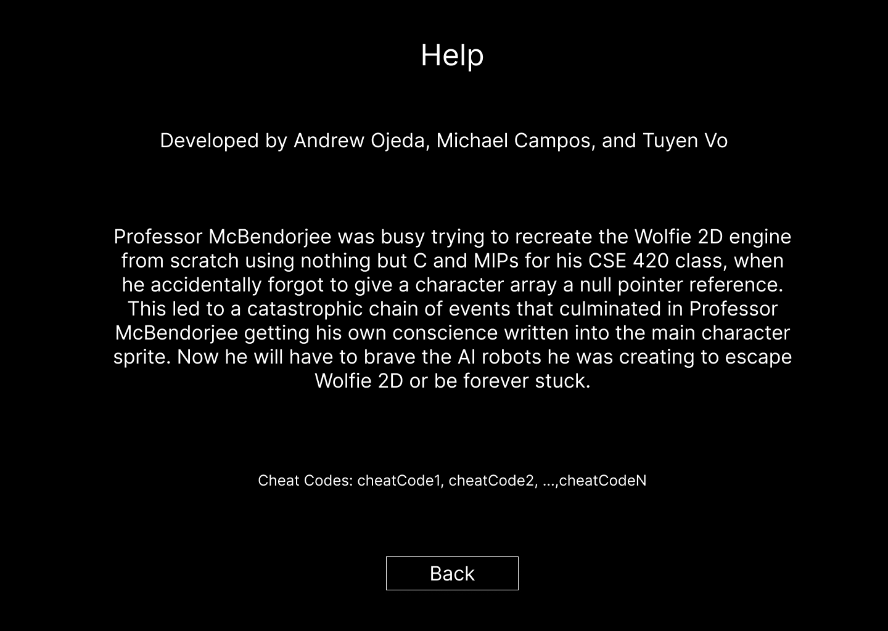
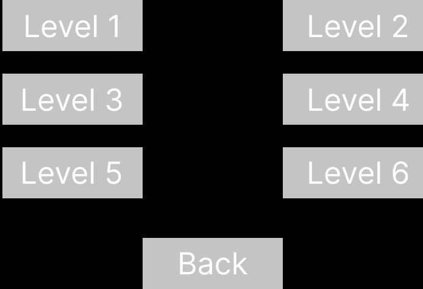

INTRODUCTION
This document describes a game called "McBendorjee Vs Robots", which is designed to be a simple, 2D top down game that will be submitted for the final project for CSE 380. The game will employ sprite based animations, tiled levels, collision detection, AI, resource management, and other various 2D game techniques learned throughout the semester.
TECHNOLOGY
McBendorjee Vs Robots will be developed for the Windows Platform using the McKilla's Gorilla game engine, which is a bare-bones engine developed by Richard McKenna for rapid prototyping 2D games. DirectX will be used as the underlying rendering technology. XACT will be used for all music and sound effects management. Artwork will be brutally simple, and so we'll simply use MS Paint.
BACK STORY
Professor McBendorjee was busy trying to recreate the Wolfie 2D engine from scratch using nothing but C and MIPs for his CSE 420 class, when he accidentally forgot to give a character array a null pointer reference. This led to a catastrophic chain of events that culminated in Professor McBendorjee getting his own conscience written into the main character sprite. Now he will have to brave the AI robots he was creating to escape Wolfie 2D or be forever stuck
OBJECTIVE
McBendorjee will have to brave 6 levels, each with 4 rooms a peace. McBendorjee will have to brave all the AI Robots he created by manipulating their movement so that they step on the various hidden bombs laid throughout the room.
All The Robots have various AI that vary in terms of complexity. Some were designed to mimic player movement, some have predetermined paths, others will seek out the player.
GAMEPLAY
The game will have a top down perspective, The player can make McBendorjee can move up, down, left or right, but not diagonal. He will have a baseball bat as a melee weapon which he can hit the enemies with. The bat cannot damage the enemies directly, but they will get stunned and their behaviors will change after. McBendorjee has 5 hitpoints, if he runs out of these it will be gameover.
The map will consist one room that is 32 by 32 tiles. Each level will have 4 rooms. Within the room are multiple hidden bombs that player cannot see. Each bomb will have 3 square sections around it where the bomb is the center of the square. The largest square will have an area of 49 tiles, the second square will have an area of 25 tiles, and the smallest square will have an area of 9 tiles. If the player is not within any of these squares their sprite body will be white. If they are within the largest square they will be green, the middle square they will be yellow, and the smallest square they will be red. If they step on the bomb it will instant game over. They player has an option to mark the bomb with a flag for future reference, but this will not have any affect on the bomb itself other than for visual reference.
Within each room will be certain number of enemies. There number of enemies will always be equal or less than the number of bombs in the room. The enemies will have various behaviors that the player will have to manipulate. If an enemy steps on the bomb, they will be destroyed and so will the bomb. If an enemy collides with the player, they will take take damage and have temporary invincibility frames from taking damage from enemies (but not bombs). Enemies will do various amounts of damage. Each type of enemy will have various behaviors and responses to being hit. The goal is to get all the enemies to step on the bombs. Once that has happened, the player needs to step on the end room title to clear the room. A level is completed once all 4 rooms have been completed.
| Enemy Name | Initial Behavior | Behavior After Being Hit | Damage Dealt |
|---|---|---|---|
| Blue Robot | Moves opposite direction of player when player moves | Moves same direction as player when player moves | 1 |
| Yellow Robot | Moves opposite direction of the player regardless when the player moves | Moves same direction as the player regardless when the player moves | 2 |
| Red Robot | Seeks out the player | No change but still freezes when hit | 3 |
| Blue Robot Mouse | Consistently moves left or right, or up or down. Reverse direction if it has a collision | Reverses direction | 2 |
| Yellow Robot Mouse | Consistently moves in the opposite direction the player is facing | Consistently moves in the same direction the player is facing | 2 |
| Red Robot Mouse | Consistently moves left or right, or up or down. If the player appears in the same X and your Y coordinate, it will start moving in that direction | No change but still freezes when hit | 2 |
| Blue Statue | Stays still and shoots a projectile in the north, west, south, then east direction | Launches back 3 tiles in the opposite direction it was hit | 1 |
| Yellow Statue | Stays still and shoots a projectile in the north, west, south, and east directions simultaneously, then in all four diagonal directions simultaneously | Launches back 3 tiles in the opposite direction it was hit | 1 |
| Red Statue | Stays still and shoots a projectile in the direction of the player | Launches back 3 tiles in the opposite direction it was hit | 2 |
There will also two types of collideable objects in the room. Blocks that can be moved when the player hits them, and blocks that can't be moved at all. Moveable blocks will move one tile in the opposite direction they were hit. Both McBendorjee and the enemies cannot go through these blocks. Blocks can cover the end room title, so be careful!
CONTROLS
This game will be played using both a keyboard and mouse. Once started, use the following:
- W or UP-ARROW - Move Up
- A OR LEFT-ARROW - Move Left
- D OR RIGHT-ARROW - Move Right
- S OR DOWN-ARROW - Move Down
- SPACE or LEFT-MOUSE-CLICK - Melee Attack
- SHIFT or RIGHT-MOUSE-CLICK - Place a flag on a bomb tile
- P - Panic Button, Resets the Room to it's original state
- ESC - This pauses the game and presents a pop-up window to the player asking them to continue when they are ready. If a game is not in progress, ESC does nothing.
GRAPHICAL USER INTERFACE
As far as the GUI is concerned, if we consider
- Splash Screen - The splash screen GUI simply presents a game logo. In the background will be a random room from the game, with Professor McBendorjee's sprite playing it's idle animation. Start button for the user to press when they are ready to play. Upon pressing it, a brief scripted sequence is played explaining the back story for the game. While playing the message "Press ESC to Skip" should be displayed at the bottom of the screen. If pressed, the game will jump to the main menu.
-
Main Menu - After the User has watched or skipped the
intro, they will be given the option to start the game, as well as go
to a levels selection screen, a controls screen, and a help screen.

- New Game - If pressed, a new game will start from Level 1.
- Level Select - If pressed, the level select screen will load, which will allow the user to start the game from a specific level. The final build will only have the levels the player has unlocked.
- Display Controls - If pressed, the game will display an info screen that includes a description of all game controls.
- Leader Boards - If pressed, the game will display an info screen with the fastest times for clearing each level.
- Help - If pressed, the game will display an info screen with information about the game authors, characters, enemies, and backstory. It will also have a list of cheat codes to help with development and grading. 



-
In-Game GUI - On the left of the screen will be two
buttons and other game information

- Pause Button If pressed, the games action will pause and a screen displaying the controls, and will have two buttons, one for resuming the game, and one for exiting the game
- Panic Button If pressed, the current room will reset to it's original state. The timer will continue from where it was. Player will also loose one health point. This can be used if the player soft locks themselves.
- Player Health Display for the player health.
- Timer Current timer for the current level. Displayed in Hours, Minutes, and Seconds.


ARTWORK
All artwork in the game will be original. The following needs to be created:
-
McBendorjee - we'll only dress McBegndorjee in his lab
coat. The color of his lab coat will determine if there are bombs
nearby so we'll need to make artwork for him in his White, Green,
Blue, and Red outfits. Each will require animations for:
- Walking Up
- Walking Right
- Walking Left
- Walking Down
- Attacking Up
- Attacking Right
- Attacking Left
- Attacking Down
- Taking Damage
- Dying
-
Enemies
-
Robot - Simple one eyed robot sprite, with
three Blue, Yellow and Red variations, No attacking animation needed
as they do damage by colliding. No damage animation needed as they
only die from one hit from a bomb. Idle and frozen animations will simply
be the last walking animation
- Walking Up
- Walking Right
- Walking Left
- Walking Down
- Dying
- Moving Up
- Moving Right
- Moving Left
- Moving Down
- Dying
- Looking Up
- Looking Right
- Looking Left
- Looking Down
- Dying
-
Tiles
- Main Floor - Two simple alternating colors for the non collideable floor
- Wall - Eight simple collideable wall tiles (Four corners and Four flat walls)
- Blocks - Two types of blocks of different colors, both collideable, one moveable one not
- End Switch - Simple switch tile that the player will step on once all enemies have been defeated, non collideable
- Level Themes - If time permits, a different theme will be used each level, other wise every level will have same tileset
SOUND EFFECTS
All sound effects will be original. Sounds must be made to coincide with each of the following events:
- Player Move
- Player Attack
- Player Damage
- Player Death
- Enemy Hit
- Enemy Death
- Game Paused
MUSIC
- Splash/Main Screen Music
- Level 1 Music
- Level 2 Music
- Level 3 Music
- Level 4 Music
- Level 5 Music
- Level 6 Music
Web page created and maintained
by Andrew Ojeda, Michael Campos, Tuyen Vo